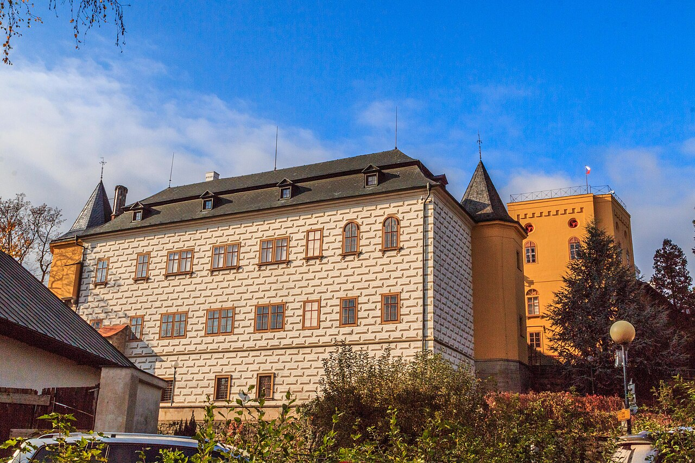
Přímo ve Slatiňanech
Státní zámek Slatiňany
Romantický zámek s rozlehlým parkem a unikátním Hippologickým muzeem věnovaným koním. Příjemná procházka i pro rodiny s dětmi.
zamek-slatinany.cz →Co navštívit
Slatiňany leží v malebné krajině na řece Chrudimce, na okraji Železných hor. V okolí najdete zámky, přírodu i historická města — ideální pro pěší i cyklistické výlety.

Romantický zámek s rozlehlým parkem a unikátním Hippologickým muzeem věnovaným koním. Příjemná procházka i pro rodiny s dětmi.
zamek-slatinany.cz →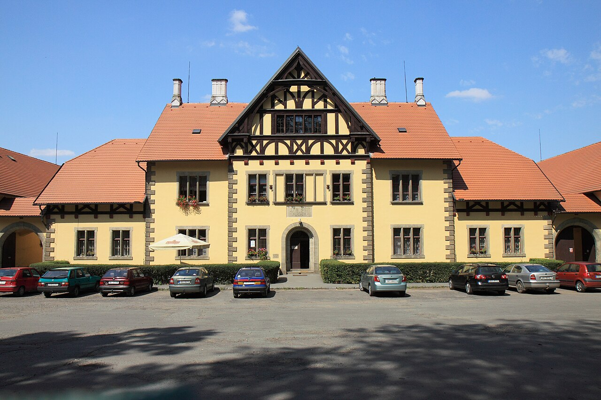
Chov ušlechtilých starokladrubských vraníků. Můžete pozorovat koně na pastvinách a projít se okolní krajinou.
nhkladruby.cz →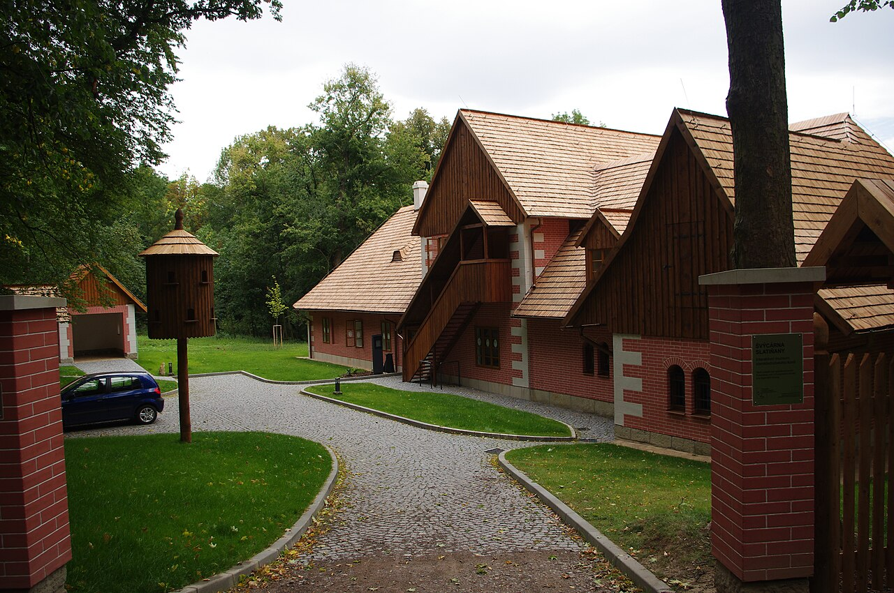
Zalesněný vrch s oborou a interaktivním Muzeem starokladrubského koně. Vyhledávaný cíl vycházek a rozhledů do kraje.
Více o Švýcárně →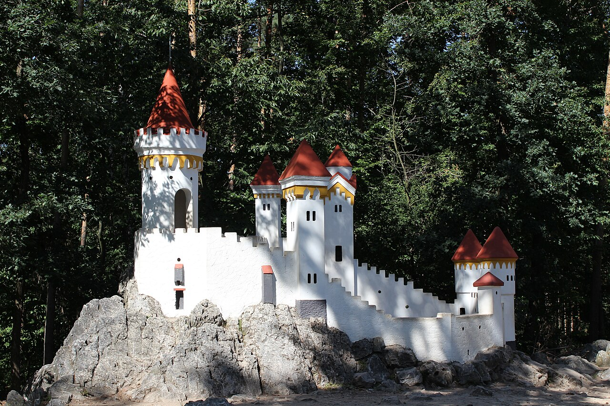
Kouzelná romantická stavba ukrytá v lesích nad Slatiňany. Oblíbený cíl kratší procházky lesem.
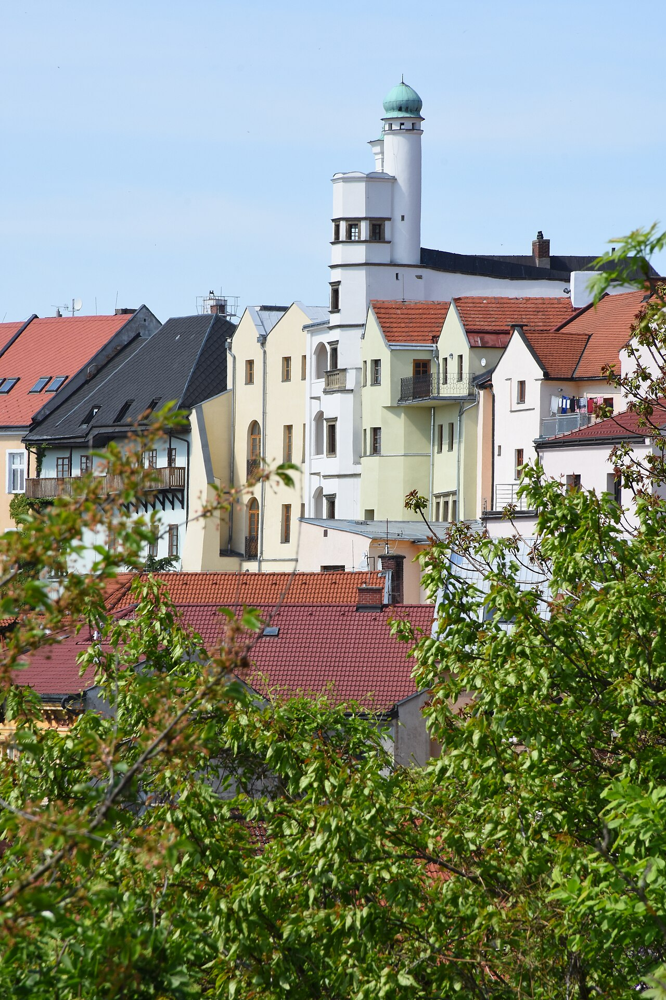
Historické město Chrudim s jedinečným muzeem loutek, náměstím a příjemnými kavárnami. Skvělý cíl i za nepříznivého počasí.
puppets.cz →Netradiční dřevěná rozhledna v rekreačním lese Podhůra u Chrudimi. Výhledy do kraje, občerstvení a stezky pro rodiny i cyklisty.
lesychrudim.cz →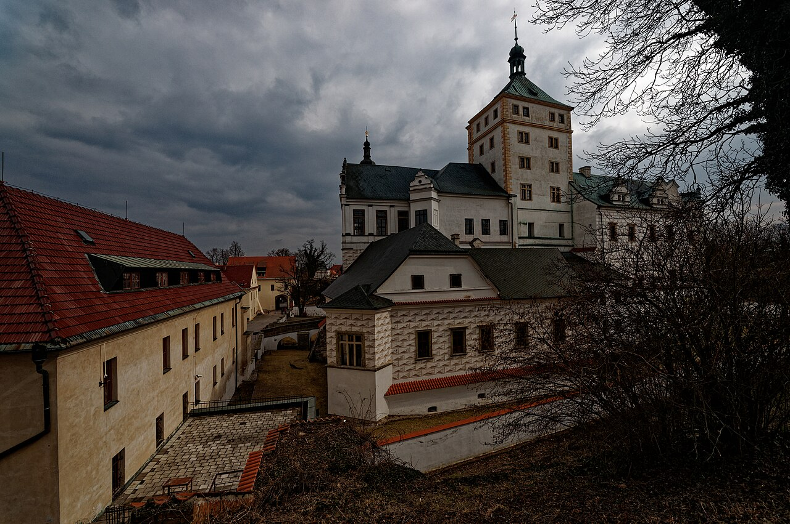
Krajské město s renesančním zámkem, historickým centrem, perníkem a slavnými dostihy. Ideální na celodenní výlet.
Zámek Pardubice · vcm.cz →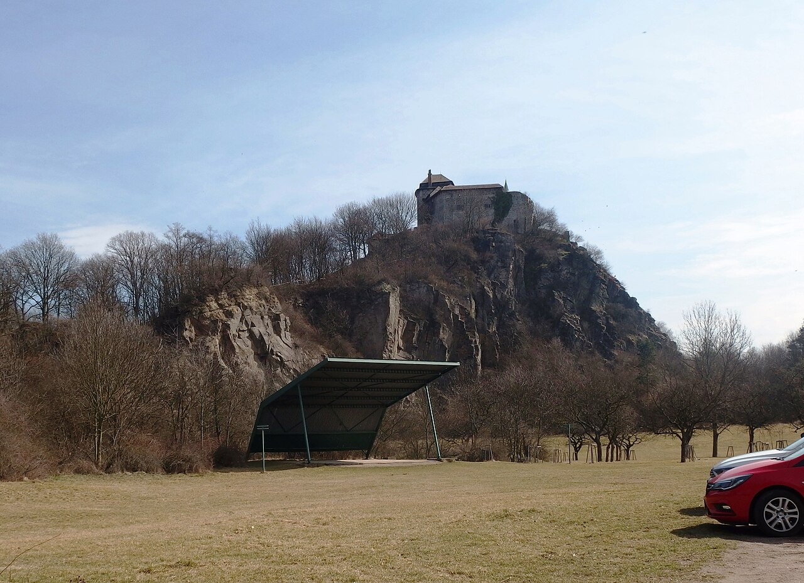
Majestátní hrad na osamělém kopci nad Polabím. Prohlídky, daleké výhledy a bohatý program kulturních akcí po celou sezonu.
hrad-kunetickahora.cz →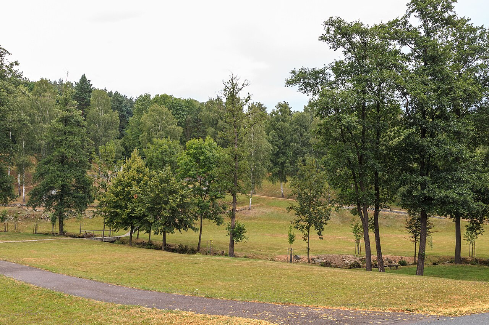
Pietní území připomínající osadu vypálenou nacisty v roce 1942. Muzeum s dokumentem a volně přístupné pietní místo v tichém údolí.
lezaky-memorial.cz →Keltský archeoskanzen v Nasavrkách přibližuje život dávných Keltů. Oblíbený rodinný výlet s programem pro děti i dospělé.
Více na zemekeltu.cz →Chráněná krajinná oblast plná turistických tras, vyhlídek a cyklostezek. Příroda přímo za humny apartmánu.
geoparkzh.cz →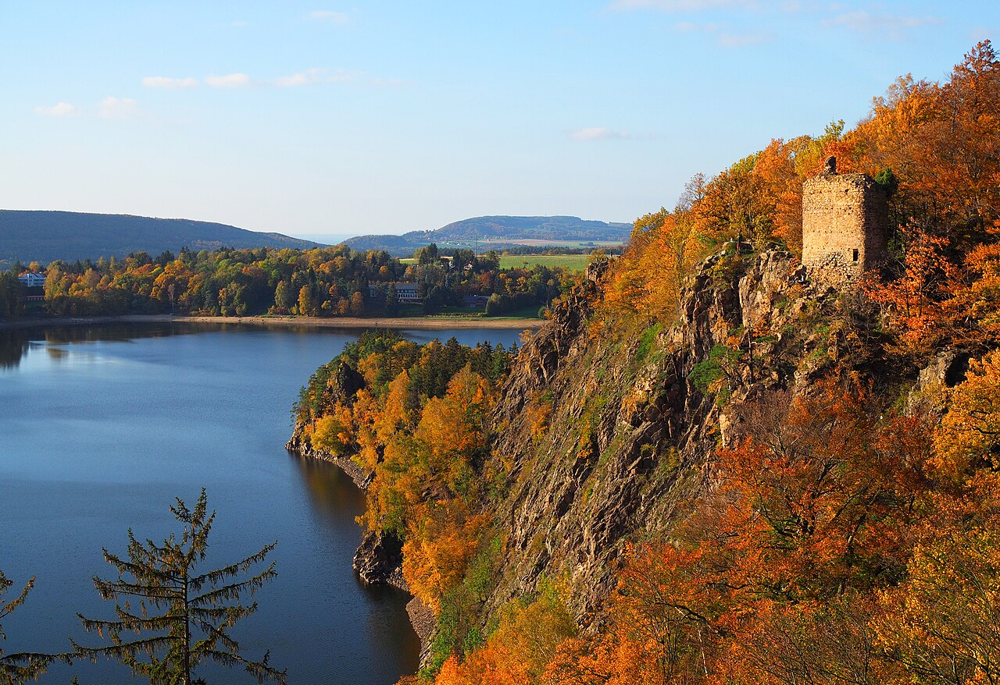
Oblíbená vodní nádrž na Chrudimce ke koupání a projížďkám lodí. Nad hladinou se tyčí romantická zřícenina hradu Oheb s nádherným výhledem.
Více o Ohbu a přehradě →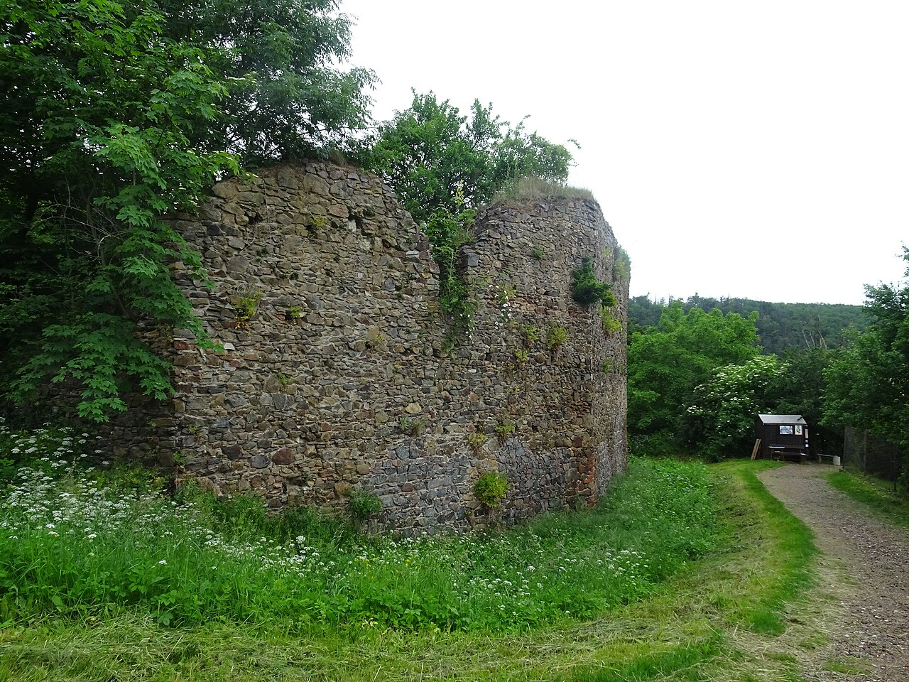
Rozsáhlá gotická zřícenina na ostrohu nad Třemošnicí, zvaná „brána do Železných hor". Z nové rozhledny je panoramatický výhled do kraje.
Více o Lichnici →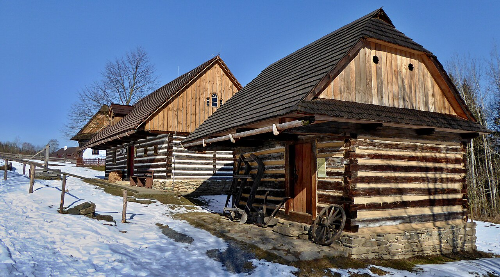
Muzeum v přírodě Vysočina — soubor lidových staveb a řemesel. V Betlémě v Hlinsku navíc expozice masopustu zapsaného na seznam UNESCO.
vesely-kopec.eu →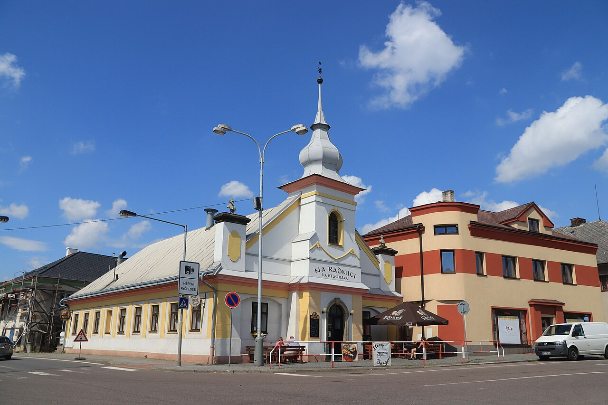
Malebný městys v údolí Chrudimky s klasicistním náměstím na hranici Železných hor a Žďárských vrchů. Výchozí bod k rybníkům a rozhledně na Zuberském kopci.
Více o Trhové Kamenici →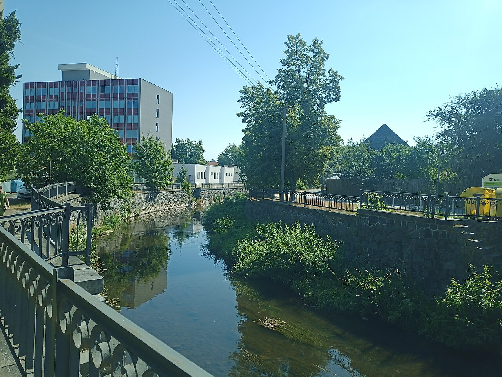
Klidné trasy podél řeky Chrudimky spojující Slatiňany, Chrudim a okolní obce. Vhodné pro rodiny i pohodovou jízdu na kole.
Fotografie výletních cílů pocházejí z Wikimedia Commons a jsou použity v souladu s jejich licencemi.